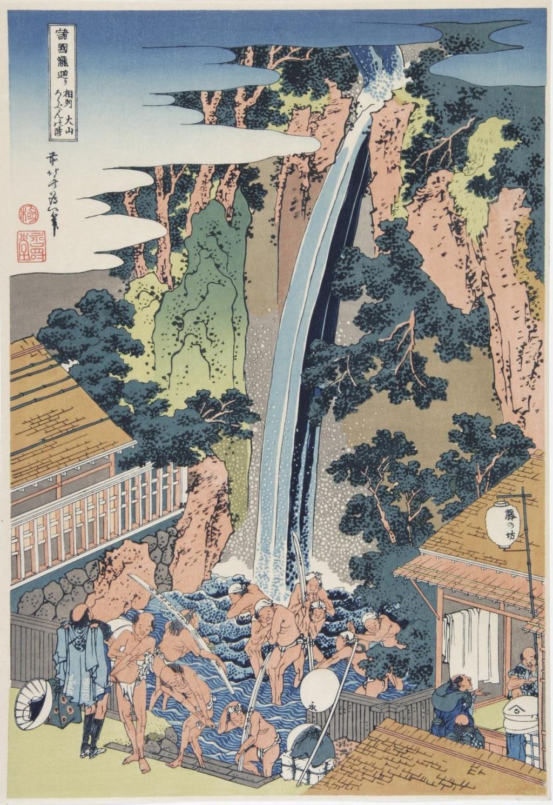

<head>
<meta charset="UTF-8" />
<meta name="keywords" content="drawing, painting" />
<meta name="description" content="drawings by Sunjy" />
<title>Sunjy</title>
<link rel="shortcut icon" type="image/x-icon" href="../../mImages/mCommon/favicon.ico" media="screen" />
<link rel="stylesheet" type="text/css" href="../../mCsses/mCommon/mCssA.css" />
<link rel="stylesheet" type="text/css" href="../../mCsses/mCommon/mCssB.css" />
<link rel="stylesheet" type="text/css" href="../../mCsses/mCommon/mCssC.css" />
<link rel="stylesheet" type="text/css" href="../../mCsses/mCommon/mCssD.css" />
<link rel="stylesheet" type="text/css" href="../../mCsses/mContent/mCssA.css" />
<link rel="stylesheet" type="text/css" href="../../mCsses/mContent/mCssB.css" />
<link rel="stylesheet" type="text/css" href="../../mCsses/mContent/mCssC.css" />
<link rel="stylesheet" type="text/css" href="../../mCsses/mContent/mCssD.css" />
</head>
<script type="text/javascript" src="../../mScripts/mContent/mContentAA.js" /></script>
<script type="text/javascript" src="../../mScripts/mContent/mContentAB.js" /></script>
<script type="text/javascript" src="../../mScripts/mContent/mContentAC.js" /></script>
<script type="text/javascript" src="../../mScripts/mContent/mContentAD.js" /></script>
<script type="text/javascript"></script> 
<script type="text/javascript">
document.write('<div class="mImgAbsolute"></div>');
/*
document.write('<p class="mFontSizeBColor" />From a white paper...</p>');
document.write('<table class="center"><tr><td>');
document.write('');
document.write('</td></tr></table>');
*/
</script>


<script type="text/javascript">
document.write('<p class="mFontSizeBColor" />Roben Waterfall </p>');
document.write('<p class="mFontSizeSColor" />The Roben Waterfall at Mount Oyama in Sagami Province by Katsushika Hokusai shows the waterfall bursting from the cliffside, crashing into the pool below.<br><br>Using the falls, the pilgrims purify themselves on the way to the Oyama shrine. Hokusai captures the spirit of each waterfall in a vertical composition, balancing the power of nature and the nature of man.<br><br>The human figures are connecting these marvels of nature with the human rituals that surround them. Hokusai makes use of Prussian blue to lend depth to the falls while capturing pilgrims in various stages of bathing.<br><br>Hokusai’s excellent series of eight Waterfalls took over two years to complete<br></p>');
document.write('<table class="center" /><tr><td>');
document.write('<br>Using the falls, the pilgrims purify themselves on the way to the Oyama shrine. Hokusai captures the spirit of each waterfall in a vertical composition, balancing the power of nature and the nature of man.<br><br>The human figures are connecting these marvels of nature with the human rituals that surround them. Hokusai makes use of Prussian blue to lend depth to the falls while capturing pilgrims in various stages of bathing.<br><br>Hokusai’s excellent series of eight Waterfalls took over two years to complete<br>" />');
document.write('</td></tr></table>');
</script>


